Knock knock. Who’s there? Killer Branding
A complete brand transformation for one of Portland’s most unique, independent comedy shows. What began as a small brewery comedy night evolved into a fully-realized entertainment experience spanning live events, merchandise, motion graphics, environmental branding, stage visuals, photography, video, music, and more.
Dead Comics Society started as a small backroom comedy show at Rogue Brewery in Portland, Oregon, created by local comedian Chase Brockett. Chase built the show over years, adding hilarious co-host Gina Marie Christopher to round out the expanding comedy-verse!
I’d been involved in small ways before the larger rebrand happened, helping build stages, setup lighting and event photography, but everything changed when Rogue Brewery went bankrupt and the show moved into its new home at Framework Studios.
That’s when I was brought in to help build something entirely new. The challenge became retaining some of the spirit and history people associated with Dead Comics Society while giving it a completely fresh identity and a new life in a new space.
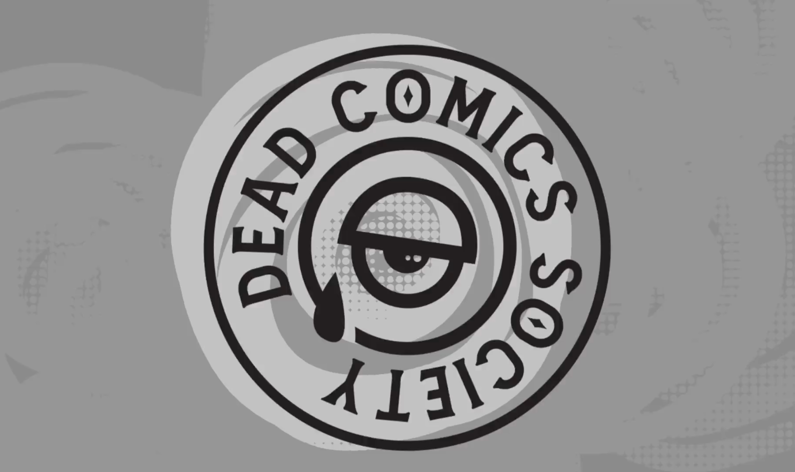
The biggest challenge was moving beyond the limitations of the original branding. Early on, there was a lot of pressure to stay closely tied to Rogue’s existing identity. Dead Guy Ale and Rogue’s branding ecosystem were always kind of hovering over everything.
Once the show became its own independent entity, we finally had the opportunity to ask: “What should Dead Comics Society actually be?”
I didn’t want it to feel like the typical comedy club down the street. I wanted people to feel like they were stepping into something weird, independent, artistic, and entirely its own. Somewhere seasoned and new comedians alike would come work out their material in a venue that invites the strange.
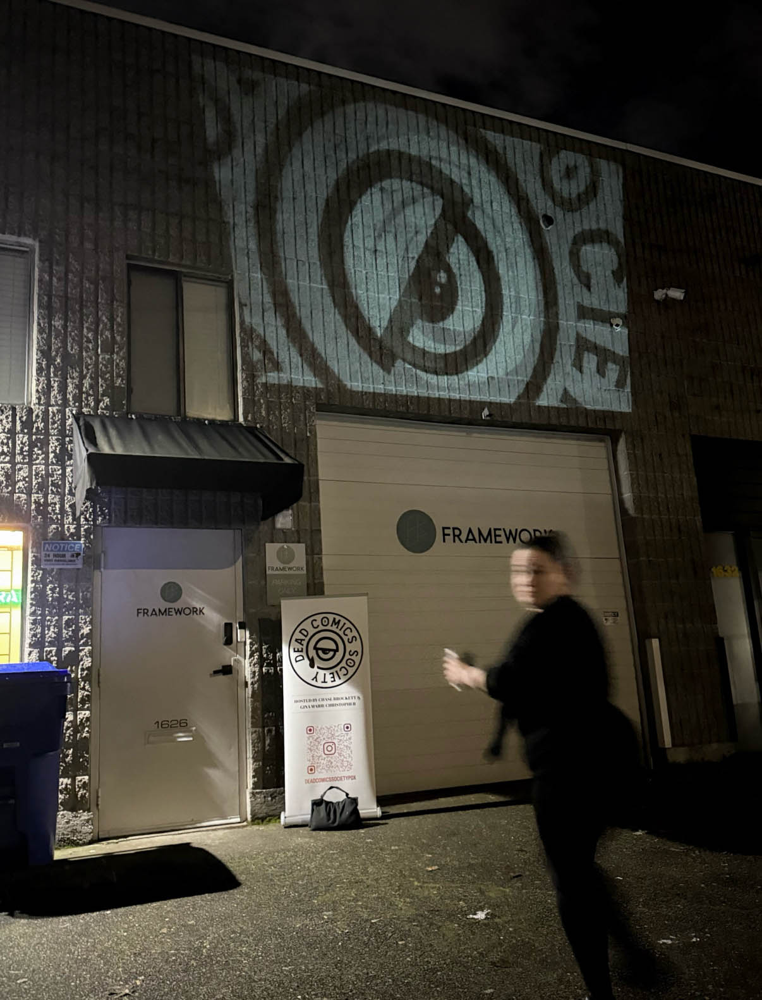
I’d always wanted the opportunity to brand a comedy show to this degree. Years ago I actually performed stand-up comedy myself, so the world of comedy has always been close to my heart.
From the beginning I wanted the artwork to feel hand-crafted and consistent, every piece of the experience coming from the same strange little universe. Every poster, projection, animation, sign, sticker, shirt, and visual element was treated as part of a larger experience.
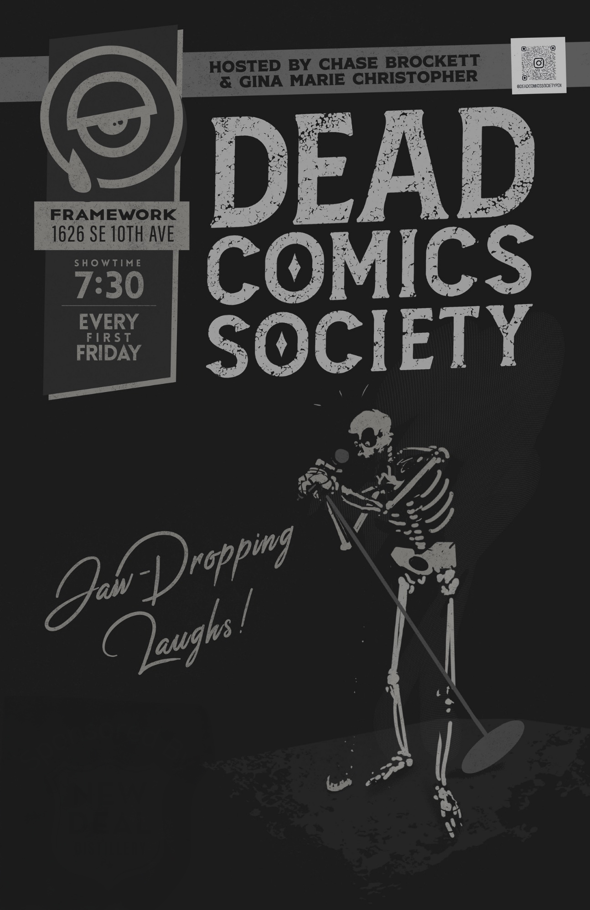
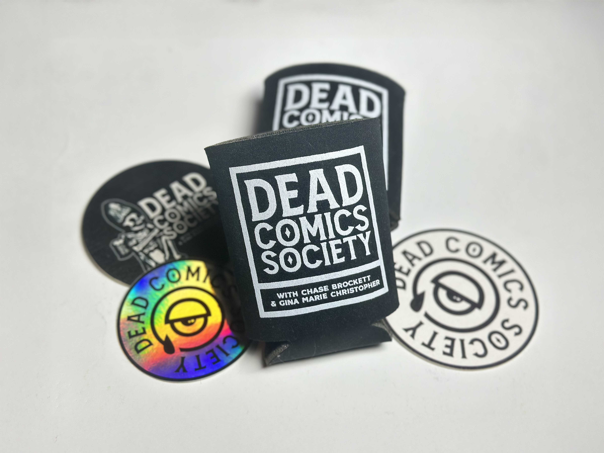
Pretty much everything.
What started as branding quickly expanded into posters, projection graphics, animations, merchandise, T-shirts, stickers, koozies, keychains, social media assets, event promotions, venue signage, photography, video, commercials, stage visuals, and even musical interludes between comedians.
At one point I was helping design everything from projection graphics to drink menus to plastic cups with the logo on them. Every little bit a commitment in service to the art of comedy.
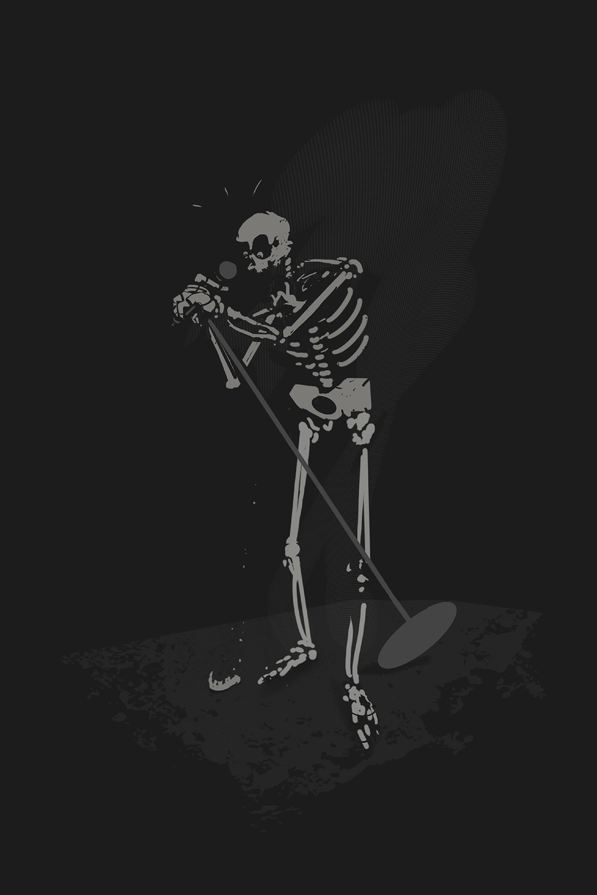
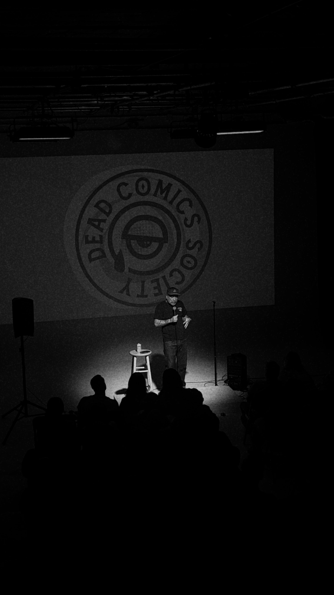
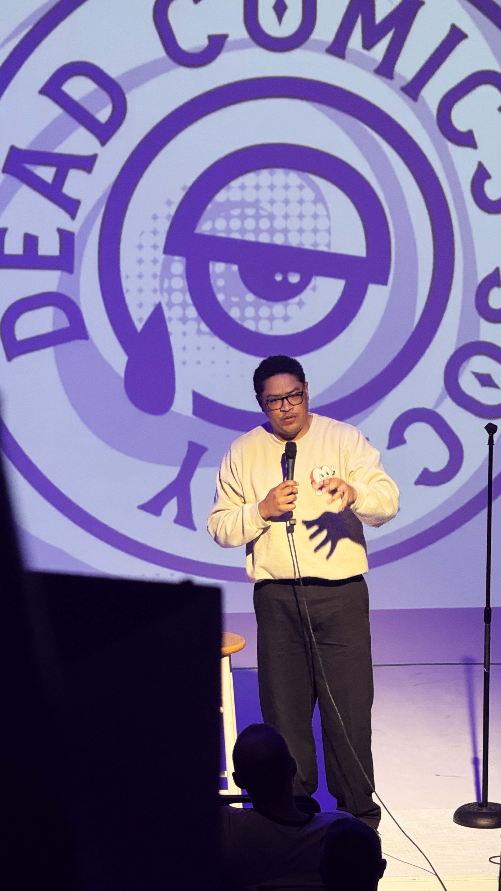
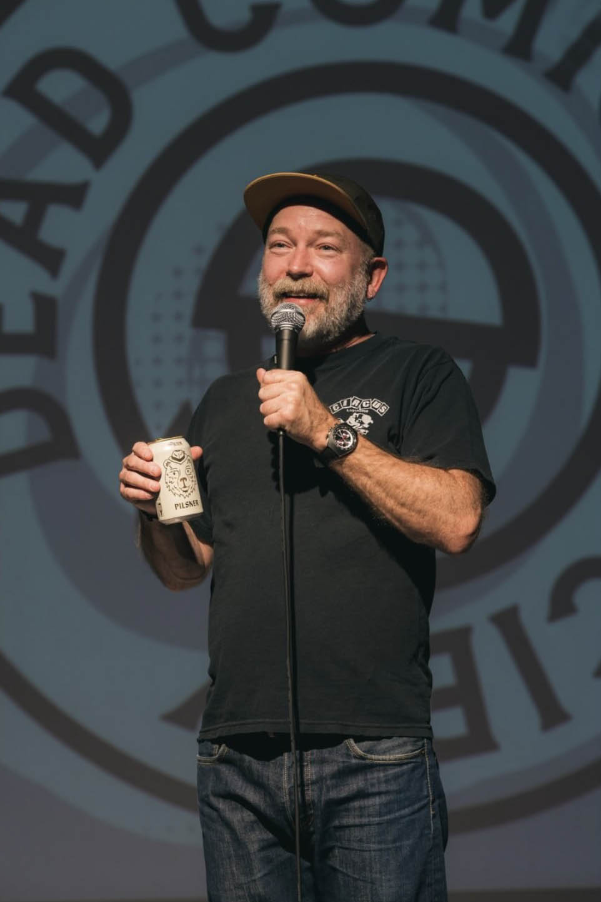
I think we knew we had crossed into something special when people started reacting to the experience itself. You could see it on their faces when they walked into the venue. The lighting was better. The atmosphere was stronger. The visuals felt cohesive. Everything had leveled up.
One of my favorite moments was booking one of my all-time favorite comedians, Kyle Kinane (on my birthday!). I managed to capture video of him describing the experience as, and I’m paraphrasing: “Willy Wonka meets Clockwork Orange nightmare Mad Max scenario.” I’ll take that.
The other proof came from watching the team embrace the identity as their own. They started painting giant versions of the eye logo onto handmade signs and building things around the visual identity without being asked. That’s when you know a brand has stopped belonging to the designer and started belonging to the people around it.
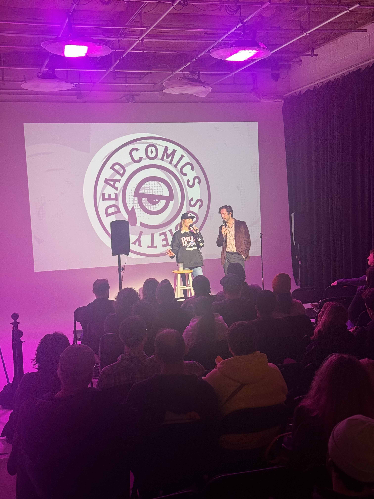
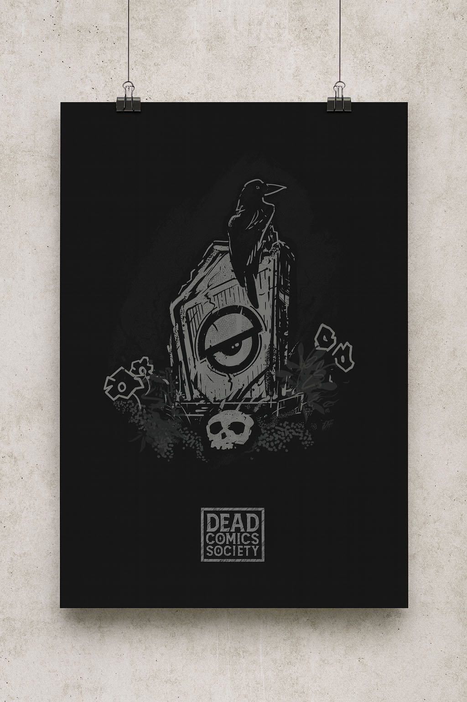
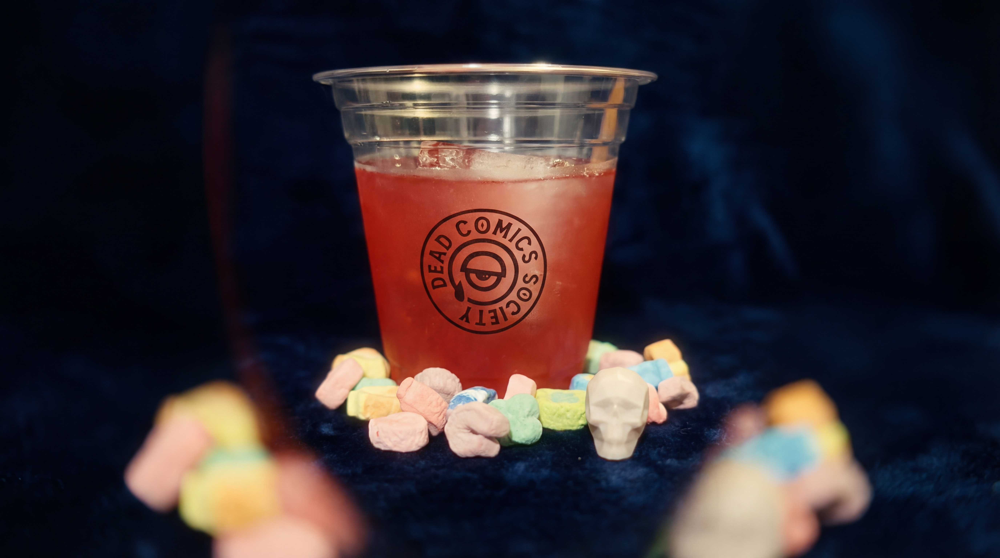
Dead Comics Society is probably the clearest example in my portfolio of what happens when I’m allowed to fully immerse myself in a project. Most branding engagements last a few weeks, maybe a few months. This became years of continual refinement and investment. It was an entire ecosystem.
It’s proof positive that creative work becomes exponentially more powerful when every piece supports the larger experience.
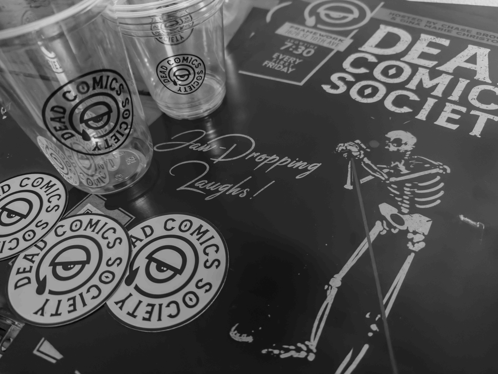
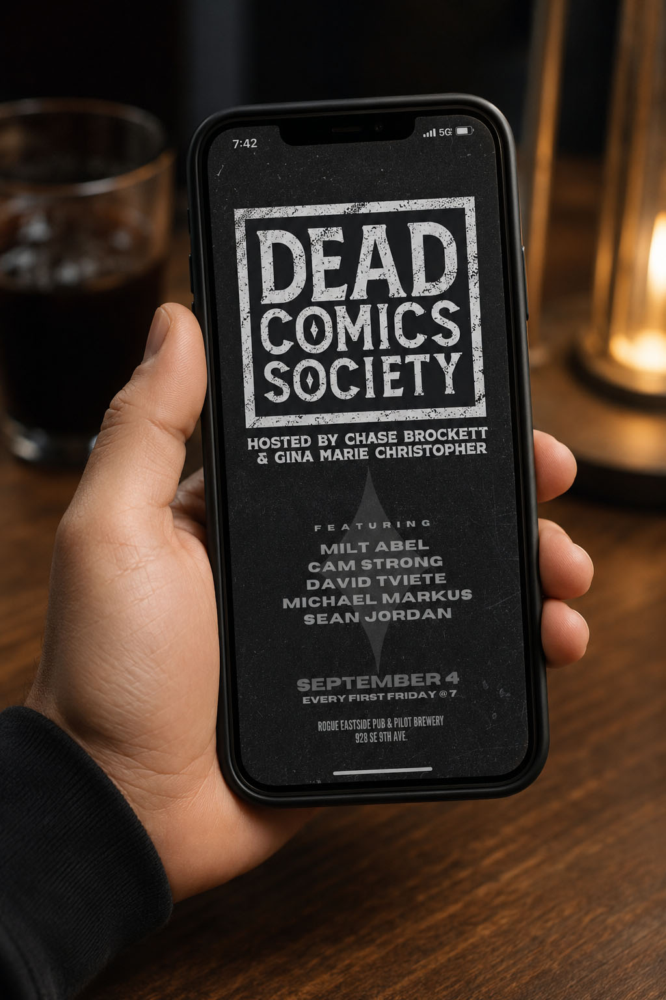
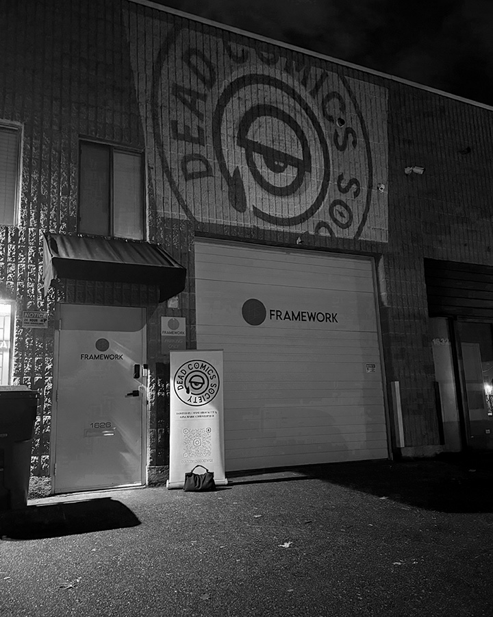
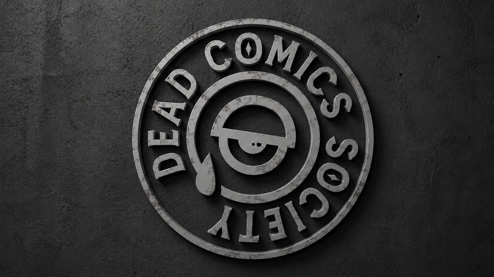